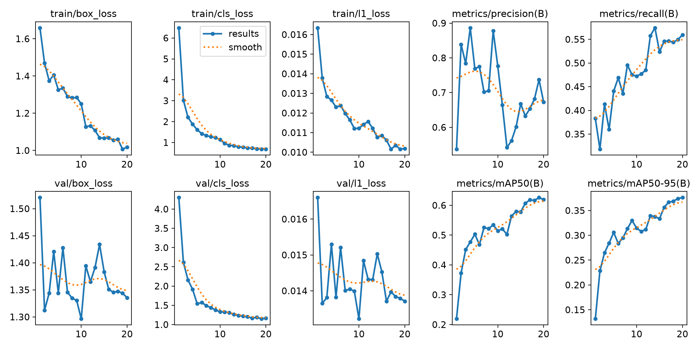

YOLO26n 新标注检测模型
手持物与头部方向 · 按驾驶人分开的初步验证
0.619框 mAP@0.5
0.376框 mAP@0.5:0.95
0.681平均精确率
0.560平均召回率
验证设计
训练 677 张、14 名驾驶人；验证 148 张、3 名不同驾驶人。缺少标签文件的 25 张已排除。原有锁定测试驾驶人没有用于该模型。
训练完成 20 轮，输入尺寸 320 × 320。
分类别样本和 AP
| 类别 | 训练框 | 验证框 | mAP@0.5:0.95 |
|---|---|---|---|
| phone | 271 | 56 | 0.393 |
| cup | 69 | 15 | 0.313 |
| other_handheld | 60 | 22 | 0.121 |
| TurnR | 108 | 31 | 0.709 |
| down | 83 | 15 | 0.290 |
| up | 5 | 6 | 0.332 |
| TurnL | 21 | 5 | 0.241 |
| forward | 447 | 88 | 0.610 |
训练曲线

结果限制
标注清单尚未全部标记为已复核；抬头和左转头样本特别少，单类 AP 波动会很大。该模型只输出目标与头部方向矩形框，不输出人体关键点、左右手占用结论或时序动作。原行为分类准确率与本模型检测 mAP 属于不同指标，不能直接比较。